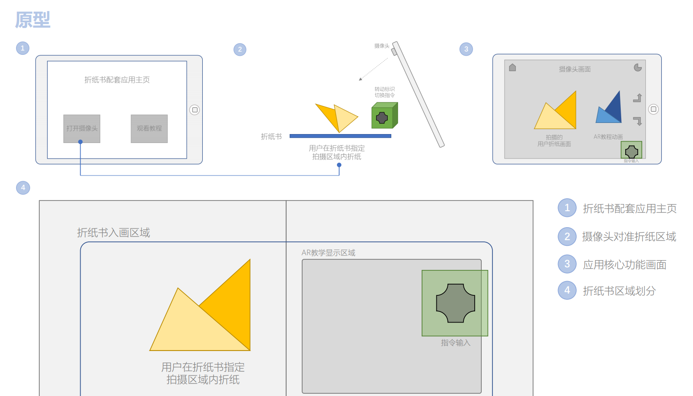

The target users of the system are people interested in origami, including origami enthusiasts(beginners and experts), teachers , and children with their parents. Origami enthusiasts need a large number of origami tutorials, but also need a number of difficulty level of the course, from the introductory course to the difficult course; children and most teachers only need to learn the introductory course, rarely use the complex steps of the tutorial.
Origami is the art of folding paper into different shapes. It originated in China in the 1st or 2nd century A.D. and was introduced to Japan in the 6th century. It is also said to have originated in Japan and Spain. The combination of origami and natural science has not only become a teaching aid in architecture, but also developed origami geometry, which has become a branch of modern geometry. Origami is both a toy and a thinking activity. It is a symbol of peace and remembrance.
Origami makes learning and creating fun for everyone involved. Even if it's just imitation, origami will make the participants feel the passion of creation. If you can create something on the basis of imitation, then the effect of origami on the brain exercise will be shown, and ultimately for the benefit of people who learn origami.
What’s more, origami as a new education model has been introduced into children's education, and has achieved some satisfactory results. After learning origami, children will have an unprecedented passion for creation, which is the role of origami in children's education.
| Date: | Feb ~ June.2020 |
| Team: | Aris Lyu, Sijia Wang, Huike Cai |
| My role: | UX Design, Animation, Graphic design |
| Platforms: | Android |
| Tools: | Unity, Blender, InDesign |
| Visit: | Supporting book |
| Share: |
The use of traditional flat origami tutorial books requires the user's concentration and spatial imagination. For complex drawings, the difficulty of reading increased significantly, especially for children.
With the help of a video tutorial, users can watch the actual operation and refer to voice guidance at the same time. However, users need to frequently click the pause and play buttons on the playback device and pull back the progress bar, which is very inconvenient.
Augmented Reality, also known as AR, is a technology that calculates the position and Angle of a camera image in real time and adds the corresponding image. The goal is to integrate the virtual world into the real world on the screen and interact with it. In other words, when the real world is presented on the screen, AR technology adds a controllable programming layer between the real world and the user, thus adding a new dimension of experience. With AR apps, users can interact more and more deeply with the real world, perform actions and get feedback in real time, rather than just looking at information.
1. Do you have any origami related experience and interests?
2. What difficulty level of origami can you master?
3.How often do you read origami tutorials?
4. How do you usually learn origami?
5. What functions do you think an origami tutorial should have (no matter it is video, text or app)?
6. What is most important to you for origami tutorials?
7. What do you think is the obstacle to your learning in the non-human origami teaching?
According to our previous research, many users who are interested in origami still cannot do origami activities without the help of the tutorial. But many existing tutorials have problems such as inconsistent steps. Therefore, we decided to use AR technology to implement a playable origami tutorial, which is as simple, intuitive and easy to understand as possible.
Many users also mentioned the problem of notes in existing origami tutorials, which were either unclear or too complex. We will also add some auxiliary functions in our origami tutorial, including text interpretation and annotation, etc., in the hope of helping users to understand better.
In our research, when discussing the factors that impede learning origami, a prevalent issue mentioned by nearly all respondents was the lack of clarity in the instructions provided for each step in tutorials. Often, crucial steps were skipped, leading to frustration and difficulty in following along. Additionally, existing video tutorials lacked a user-friendly progress bar that would allow precise control for replaying specific moments. Furthermore, the subjective preferences of the video creators sometimes hindered effective teaching.
To address these challenges, our AR tutorial introduces a unique feature known as "progress backtracking," enabling users to freely select and replay specific steps while watching instructional animations. This approach offers several benefits. Firstly, the continuous 3D animations comprehensively demonstrate the entire origami process, eliminating any issues related to skipped steps. Secondly, users have the flexibility to focus on specific areas of difficulty and review them repeatedly, aligning with their individual learning needs and preferences. This personalized approach enhances the overall learning experience and promotes a deeper understanding of origami techniques.
In our design, users have control over the tutorial process through interactive buttons on the screen. They can easily switch between necessary steps with a simple click, enabling a seamless navigation experience. Additionally, users can replay the animation of the current step as many times as needed, ensuring a thorough understanding of the instructions.
Recognizing that each step in origami varies in difficulty and time required, we aim to provide users with flexibility in their learning process. Our solution includes a speed control feature, allowing users to adjust the animation playback speed according to their individual needs.
For simpler steps, users can accelerate the video to expedite their learning progress. Conversely, for more complex steps that require careful observation, users can slow down the animation, providing a closer look at intricate operations.
In our early research, we found that many users suggested that there should be a detailed description of each step in the origami tutorial. So in our interface, we not only use 3D animation to show the specific content of each step more intuitively, but also add a transparent text explanation on the basis of it, which is convenient for users to better understand the specific content of each step.
In ordinary origami tutorials with pictures and texts, auxiliary lines are usually marked to make it easier for readers to understand. However, in our survey, many respondents said that sometimes the lines are so numerous and complex that they can be confusing, which only makes the process of understanding the tutorial more difficult.
Therefore, in our interface, we will design more reasonable labeling functions of auxiliary lines. We hope that these designs will make the process of origami easier for users to understand.
We have decided to develop a user interface for an augmented reality origami tutorial book with voice interaction. This will make it easier for users to learn more difficult origami tutorials.
Our interface can "project" virtual tutorial images onto the display area of the book, and users can observe the page from all directions simply by pointing the camera of their phone or tablet at the page. Users can easily switch between each origami step by touching the buttons on the screen.
Additionally, our interface divides the origami process into discrete pieces. Users only need to focus on the same point of view to watch the tutorial. It is also easy and inexpensive to switch between "previous step" and "next step" while following the tutorial, without having to memorize the indicator line. In this way, our tutorial becomes easier to understand and follow.
Professionals engaged in related education, such as preschool or art teachers.
We used Unity and AR kit / AR core to develop the project. We hope that users can use the product in mobile phones, tablets and computers, and the interface can run efficiently without getting stuck.
BTN: BTN is an abbreviation for user interface buttons.
Record : Record refers to the user's history of using the product.
Random: Random is a random origami tutorial for users.
Due to the epidemic situation, we cannot go back to school to obtain AR-related development equipment. As a result, we can only use a smart phone as the AR handheld device in the development process. Additionally, during the test phase, we are unable to test all the preset scenarios. For instance, we cannot assess the effect of using the product in a classroom environment due to environmental constraints.
The following is a paper prototype of our AR-based origami app and book. The main interface includes Start Scene, Menu, Index and Tutorial Scenes. The relations between each scene is shown in the sketch.

The President decided to teach Suzanne Paper Planes origami to a group of origami novices.
In this scenario, the group of origami beginners were able to learn quickly by themselves, because the app provided AR animations which were easy to understand, and the students could stay focused on their hands, rather than dragging video progress bars.

A 7-year-old girl was learning origami on iPad. Her mother wanted to cultivate the girls’ creativity and practical skills.
In this scenario, the little girl read the book and used the AR app on an iPad with her mother and changed steps through voice interaction. With the colorful 3D animation, inspiring messages and voice interaction, the girl could be concentrated on origami and learn happily.

The App is developed with Unity with baidu speech engine.
Title Page & Main Menu

Records & Endings

Turn on Hints